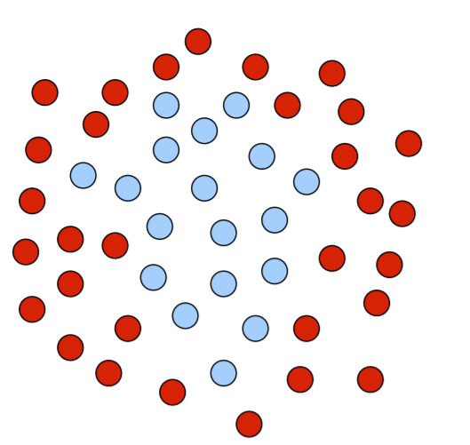
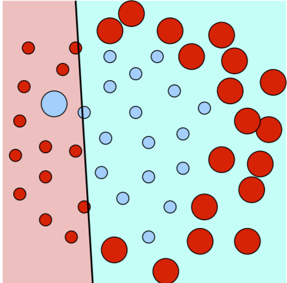
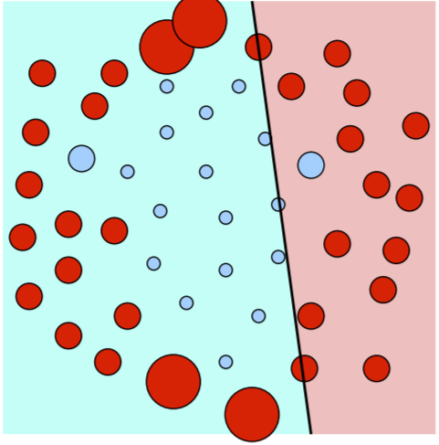

Boosting¶
Adaboost¶
AdaBoost, short for “adaptive boosting”, is an ensemble method for classification. Remember that ensemble methods create multiple models (classifiers) and combine their predictions into a final prediction. We can use AdaBoost for classification or regression. It has several key features:
Weights its sample points in training, similar to bagging
Each base learner is also weighted.
Weights of misclassified training points are increased.
More accurate base learners are given more “voting power”
We’ll analyze what all these mean in this chapter.
First of all, the input to the AdaBoost algorithm is the same as any other classification algorithm: an \(n \times d\) design matrix \(X\) along with associated labels vector \(y \in \mathbb{R}^n\). We’ll assume labels \(y_i\) are binary: \(y_i = \pm 1\).
Here are some of the more detailed ideas that characterize AdaBoost:
We train \(T\) total classifiers, named \(G_1,...,G_T\). \(T\) is used because most AdaBoost base learners are decision trees (but they certainly don’t have to be).
The weight for sample point \(X_i\) in \(G_t\) (some base classifier \(t\)) grows according to how much it was misclassified by the previous iteration’s learners, especially if misclassified by accurate learners.
For points with larger weights, we train base learners harder to correctly classify those points.
In the end, we define a metalearner whose predictions are simply a linear combination of the base learners’ predictions.
Each base learner outputs predictions as \(\pm 1\), but note that our metalearner outputs a continuous score. Of course, we can easily look at the sign of the continuous prediction and round to \(\pm 1\).
We learned previously how points with different weights were accounted for in ensemble learners. In regression, we modify the risk function by multiplying each point’s loss function by its weight. In soft-margin SVMs, we multiply each point’s slack by its weight. In boosting, we commonly use decision trees as base learners. Each base decision tree calculates an entropy that decides how to split nodes, which can certainly account for point weights. Instead of computing proportions of points in each class, we now compute proportion of total weight from those points.
Now, in each iteration \(T\), we have to find the classifier \(G_T\) and the coefficient \(\beta_T\) that minimizes risk (for a given loss function \(L\)).
Definition 21 (AdaBoost optimal classifier + weight)
Find \(G_T\) and \(\beta_T\) such that objective function
where \(M(X_i)\) is the prediction of the metalearner: \(M(X_i) = \sum_{i=1}^{T}\beta_t G_t(X_i)\).
In AdaBoost, our loss function (for the metalearner) is exponential:
where \(z\) is our metalearner’s prediction given \(X_i\), and \(y\) is the truth label of \(X_i\). Note this loss function is for the metalearner only: base learners can use any loss function they want in training (or might not even have one- e.g. k-NN). Also important to note is that, again, prediction \(z\) is continuous while truth label \(y\) is binary.
The exponential loss function penalizes badly misclassified points more. If we have a lot of outliers, however, we might not want to use this loss function.
One important thing to note is that at any iteration \(T\), \(T-1\) base learners and \(T-1\) weights have already been trained. We’re only optimizing two: \(\beta_T\) and \(G_T\).
So now we want \(G_T\) that minimizes risk- or, in other words, the base learner that minimizes the sum of weights \(w_i^{(T)}\) over all misclassified points \(X_i\).
Each learner’s weights are dependent on the previous learner’s weights:
Notice our point weight shrinks (multiply by \(e^{-\beta_T}\)) if classified correctly, and grows (multiply by \(e^{\beta_T}\)) if misclassified.
Why not just create a (deep) decision tree with 100 percent training accuracy? Of course, overfitting, but there are other reasons as well.
So now, we know how to choose base learner \(G_T\) that minimizes risk. To choose the coefficient \(\beta_T\), we simply set \(\frac{\partial}{\partial \beta_T}R = 0\):
This gives us the optimal weight of \(\beta_T = \frac{1}{2}\ln(\frac{1-\text{err_T}}{\text{err}_T})\).
Now that we have a way to calculate \(G_T, \beta_T\) at each iteration, we can build our optimal metalearner!
Note that if we have a base learner with error rate 0 (perfect classification of training points), then \(\beta_T = \infty\)- and the learner becomes the metalearner. A base learner with training accuracy of 0.5 is a random and completely useless classifier, giving \(\beta_T = 0\). Notice I said exactly 0.5: it turns out classifiers with training accuracy of, say, 30% is just as useful as a classifier with accuracy 70%! We simply have to flip the sign of predictions. The formula accounts for this as well.
Now, finally, we are ready for the AdaBoost algorithm.
Algorithm 22 (AdaBoost)
Initialize weights \(w_i \leftarrow \frac{1}{n}\) for all \(i \in [1,n]\)
Train \(T\) learners. For \(t \leftarrow 1\) to \(T\)
Train \(G_t\) with weights \(w_i\)
Compute weighted error rate for \(G_t\) as \(\text{err} \leftarrow \frac{\sum_{\text{misclassified}}}{\sum_{all}w_i}\)
Compute coefficient \(\beta_t \leftarrow \frac{1}{2}\ln(\frac{1-\text{err}}{\text{err}})\)
Reweight all points: calculate \(w_i^{(T+1)}\) for all \(i\) as given by the formula above.
Return metalearner \(h(z) = \text{sign}(M(z)) = \text{sign}(\sum_{i=1}^{T}\beta_t G_t(z))\)
Let’s visualize what AdaBoost is doing. First, say we have the below set of points that belong in class C (blue) and not class C (red). We want to build a classifier.
{kind=link}
The AdaBoost algorithm is boosting, so we assign weights to each training point as we proceed through training each base learner. Large circles represent points with big weights, small with smaller weights. Suppose we first train a linear classifier that predicts right as class C (blue) and left as not class C (red), which might look like this:
{kind=link}
See how incorrectly classified points- points that are a different color than the shaded region they are in- are given bigger weights. Now, since these points are more important to take care of, the next classifier trained might look like this:
{kind=link}
So some of the big points from before are smaller, but we still misclassify a few points, so they are bigger than ever. Future iterations will try to take care of these.
Base Learners: Decision Trees¶
Important
Test
Most of the time, the base learners in AdaBoost are decision trees. Why trees over others? Additionally, why should these trees be short trees instead of deep, accurate ones? There are many reasons for this.
The first is speed. Remember we have to train multiple base learners. A tree that takes twice as long to classify a point is gonna have that time amplified when it’s the same way with hundreds of base trees. With short trees, they are very fast.
Another reason is we can get very good boosting classifiers without any hyperparameter search. This is much different than many of the classifiers we know: neural nets, SVMs, etc.
Another reason: it is very easy to make a mediocre 55% accuracy tree (just higher than 50%). Once we train enough learners like this, we’ll have a very high accuracy for the metalearner.
Another reason: boosting short trees gives us a lot of bias-variance control. It is possible for boosting to overfit, but because AdaBoost trees are short, we are able to reduce overfitting if needed. As you train more learners, the AdaBoost bias decreases. The AdaBoost variance is more complicated: it often decreases at first, because successive trees focus on di↵erent features, but often it later increases. Overfitting with AdaBoost is kind of unpredictable.
AdaBoost with short trees is a form of subset selection. Features that don’t improve the metalearner’s predictive power enough aren’t used at all. This a means of regularization and also improves running time, especially with many irrelevant features.
Finally, note that boosting linear classifiers gives an approximately linear metalearner, so it’s not a great idea to use linear classifiers as base learners. Methods with nonlinear decision boundaries benefit more from boosting, because they allow boosting to reduce the bias faster. Sometimes you’ll see examples where depth-one decision trees are used with AdaBoost. But depth-one decision trees are linear! Even depth-two decision trees boost substantially better.